From olympiads and robotics competitions to international research fairs and innovation challenges, we help students develop the skills needed to compete and succeed on global stages.
OUR STUDENT PROJECTS
Incubated innovations
01 / CURRENT PROJECT
ORCA (GPS)
ORCA is a targeted oil-spill cleanup robot developed by students at GPS. It operates on water surfaces to skim, isolate, and recover spilled oil (petroleum hydrocarbons) efficiently. The robot’s primary goal is to protect marine ecosystems from severe oil pollution using a fast, automated system that minimizes the need for risky manual cleanup operations.
Kurmatron is a biomimetic water quality monitoring robot created by middle school students (Grades 6–8) at NISV. Designed with a turtle-inspired body, it glides smoothly across water bodies without causing turbulence or disturbing aquatic life. Equipped with onboard sensors, its main purpose is to continuously monitor and track key water parameters to detect pollution early.
Students mentored by members of our team have earned recognition through opportunities including the British Council STEM Award and the National Standard Examination pathway.
British CouncilSTEM Award
NSE ’26National Standard Examination pathway
500+Students reached
4NGO partners
COMPETITIONS & INNOVATION CHALLENGES
A world of opportunities.
Students receive mentorship, project support, and preparation for opportunities including these competitions. These are pathways we help students explore, rather than a list of awards won.
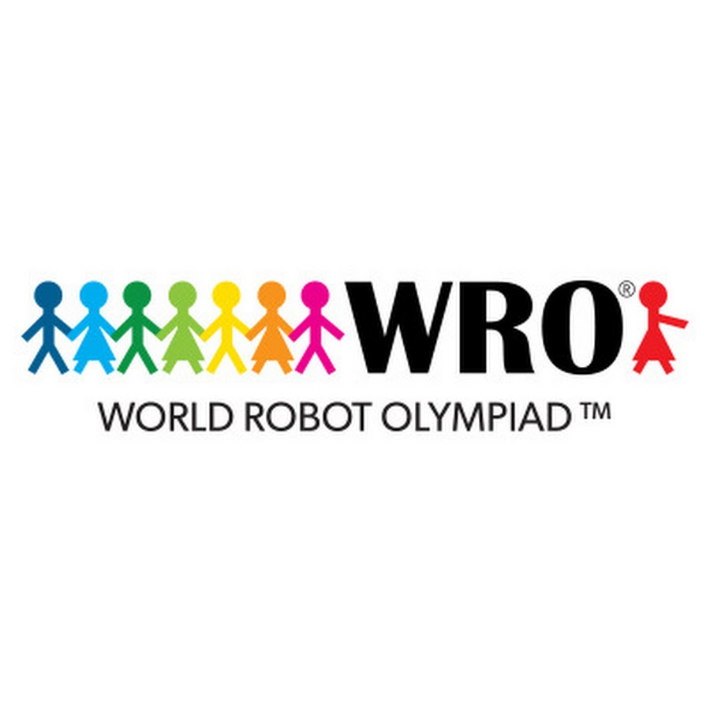
World Robot Olympiad (WRO)
MENTORSHIP & PREPARATION
FIRST LEGO League
FIRST LEGO League
MENTORSHIP & PREPARATION
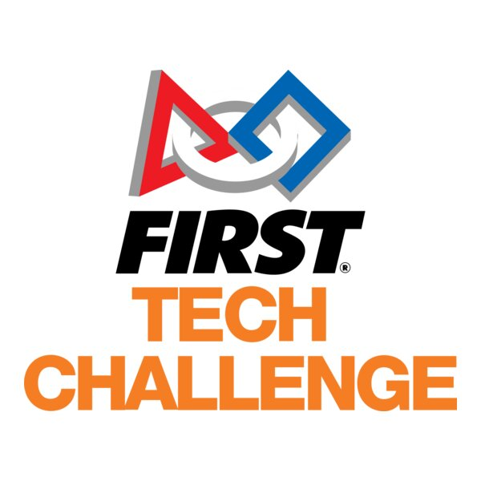
FIRST Tech Challenge
MENTORSHIP & PREPARATION
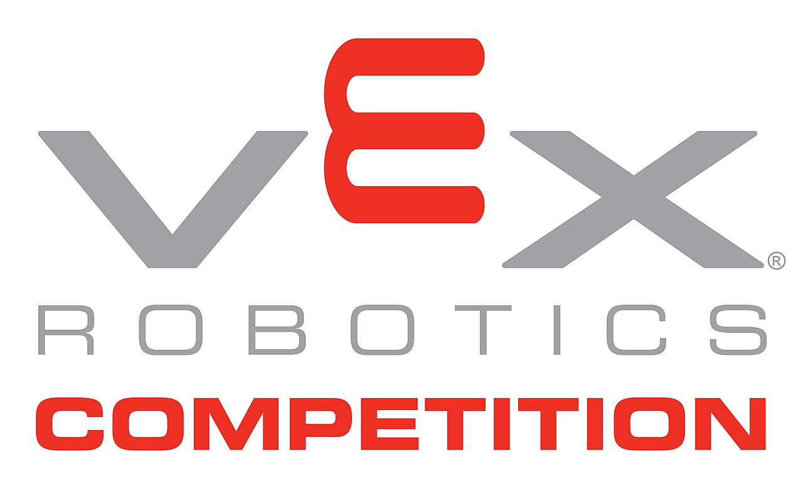
VEX Robotics
MENTORSHIP & PREPARATION
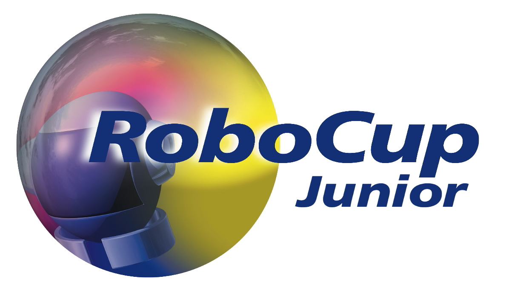
RoboCup Junior
MENTORSHIP & PREPARATION
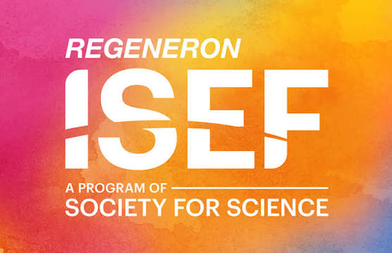
International Science and Engineering Fair (ISEF)
MENTORSHIP & PREPARATION
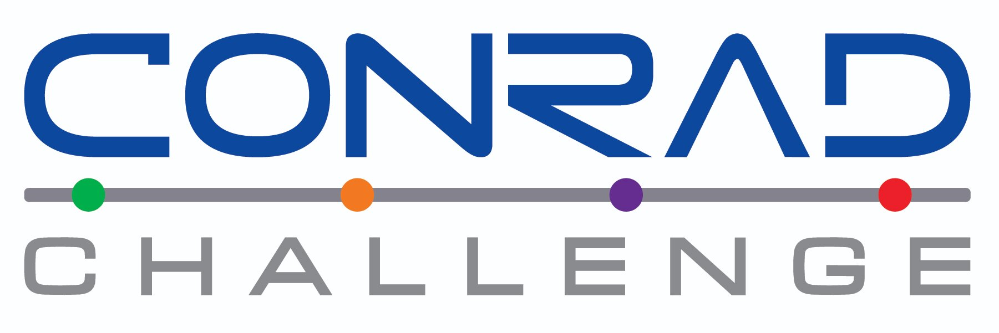
Conrad Challenge
MENTORSHIP & PREPARATION
IRIS National Fair
IRIS National Fair
MENTORSHIP & PREPARATION
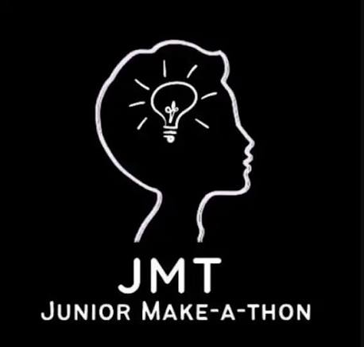
Junior Makeathon
MENTORSHIP & PREPARATION
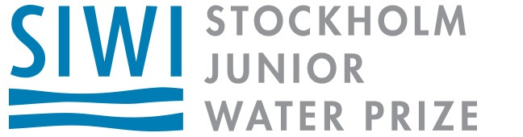
Stockholm Junior Water Prize
MENTORSHIP & PREPARATION
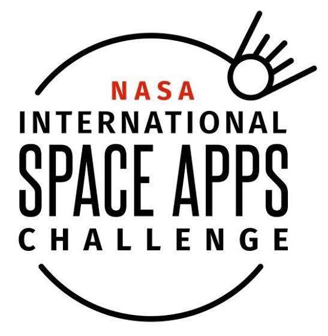
NASA Space Apps Challenge
MENTORSHIP & PREPARATION
OLYMPIAD PATHWAYS
Take your curiosity further.
Explore opportunities across mathematics, biology, chemistry, physics, informatics, and artificial intelligence. These are learning pathways, not a record of awards won.
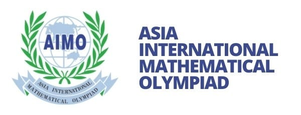
Asia International Mathematical Olympiad
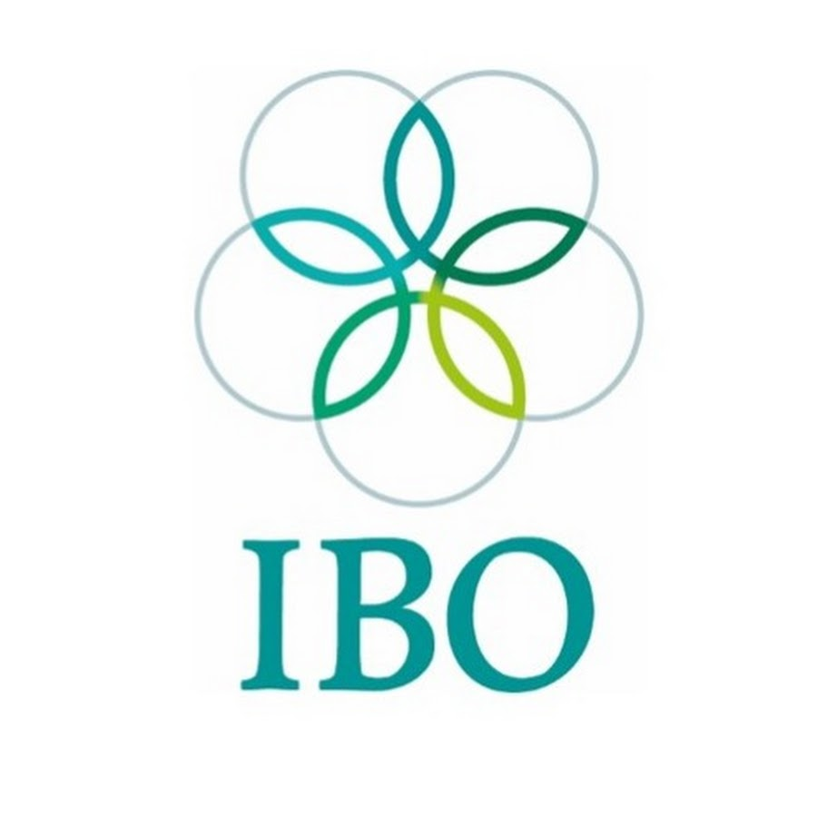
International Biology Olympiad
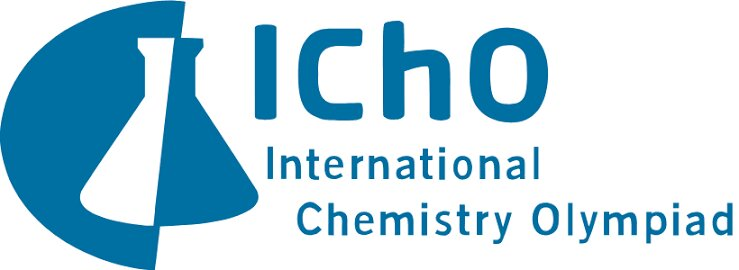
International Chemistry Olympiad
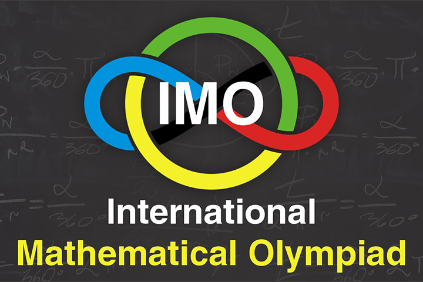
International Mathematical Olympiad
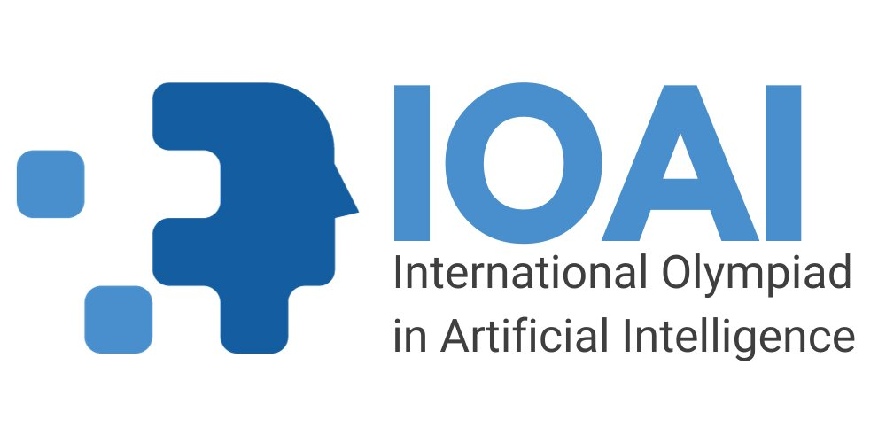
International Olympiad in Artificial Intelligence
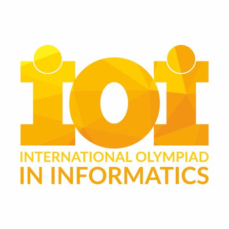
International Olympiad in Informatics
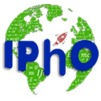
International Physics Olympiad
YOUR NEXT CHAPTER STARTS HERE
Ready to transform education?
Join us in our mission to bring curiosity-driven learning to every student.